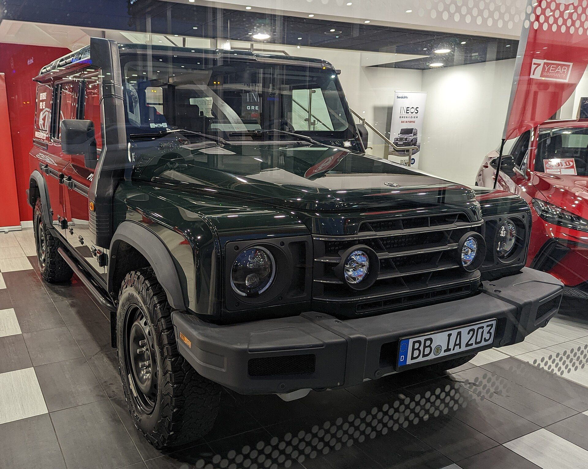

Grenadier
“A billionaire couldn't buy the old Defender, so he built his own from a pub table, a BMW engine and a pair of tractor axles. It is gloriously square, genuinely capable and steers like a canal boat (until 2026).”
When Land Rover ended classic Defender production at Solihull in January 2016 after 67 years, chemicals billionaire Sir Jim Ratcliffe tried to keep it alive. Jaguar Land Rover said no. So Ratcliffe did what billionaires do: he founded a car company, Ineos Automotive, and named its first product after his favourite pub, The Grenadier in Belgravia, where the idea was first kicked around.
The result is a body-on-frame, beam-axle, permanent-4WD box built in a former Smart car factory in Hambach, France. BMW supplies the straight-six engines (B58 petrol, B57 diesel), ZF the eight-speed automatic, Tremec the two-speed transfer case and Italian tractor specialist Carraro the solid axles. Magna Steyr helped with the engineering.
The Station Wagon arrived in late 2022, with US deliveries (petrol only) beginning for the 2024 model year. The Quartermaster double-cab pickup followed into production in late 2023 and reached US buyers for 2025. Both are new enough that the owner knowledge base is still being written, mostly on forums and in recall notices.